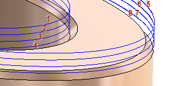

Lorsque cette option est activée, l'intégralité d'une courbe est coupée avant de procéder à la coupe de la courbe suivante.
2 courbes d'arête sélectionnées

Activé Coupe de la courbe 1 terminéeavant de passer à la courbe 2
Désactivé Trajectoire d'outil générée par niveaucoupant les deux courbes